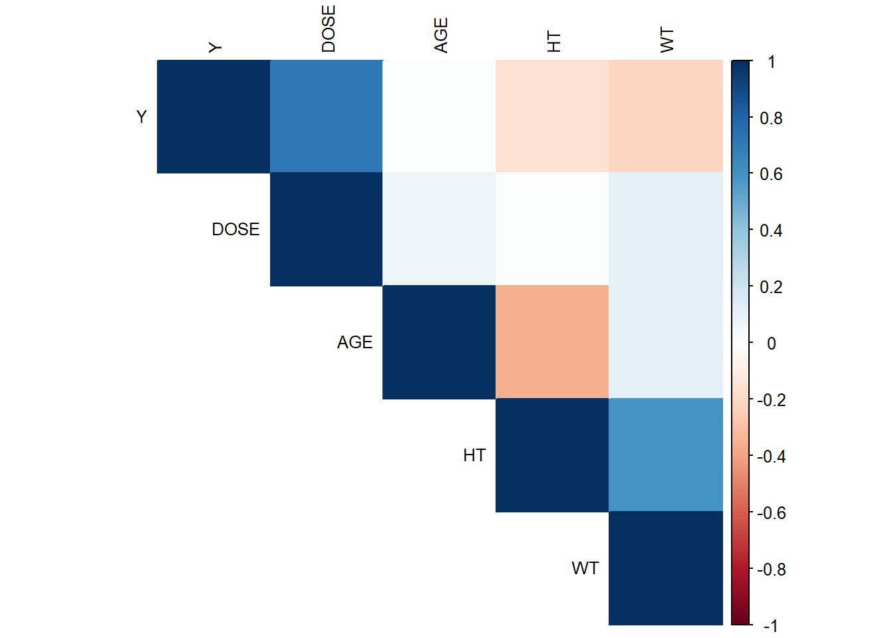
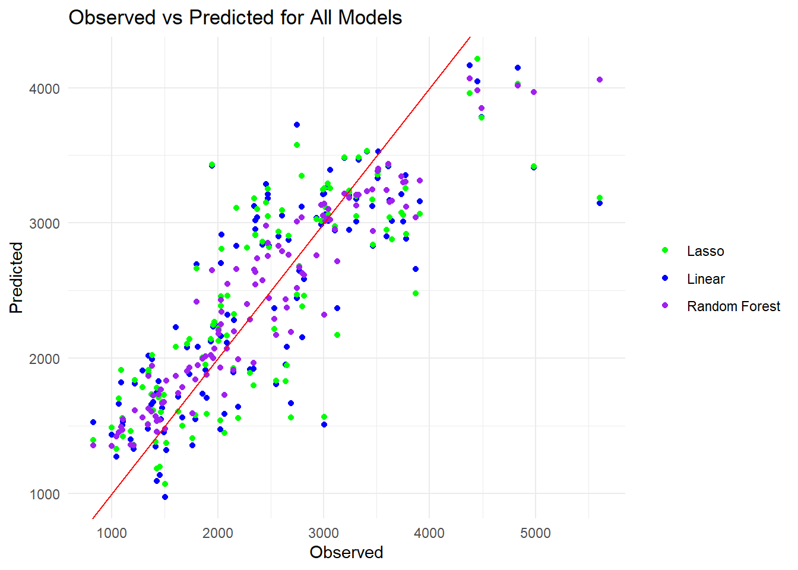
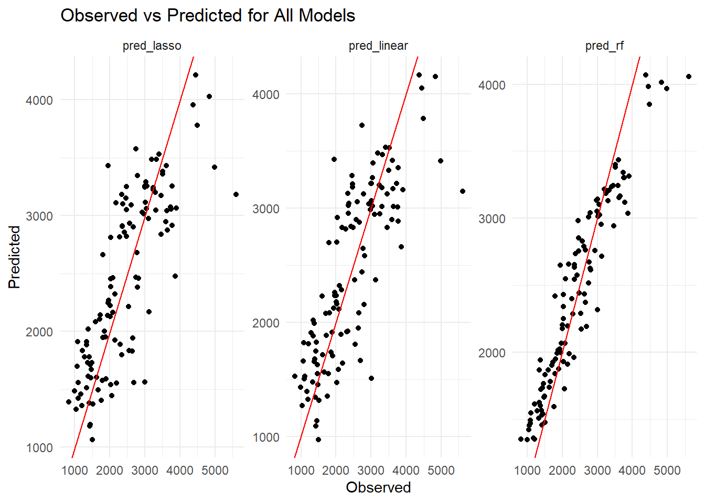
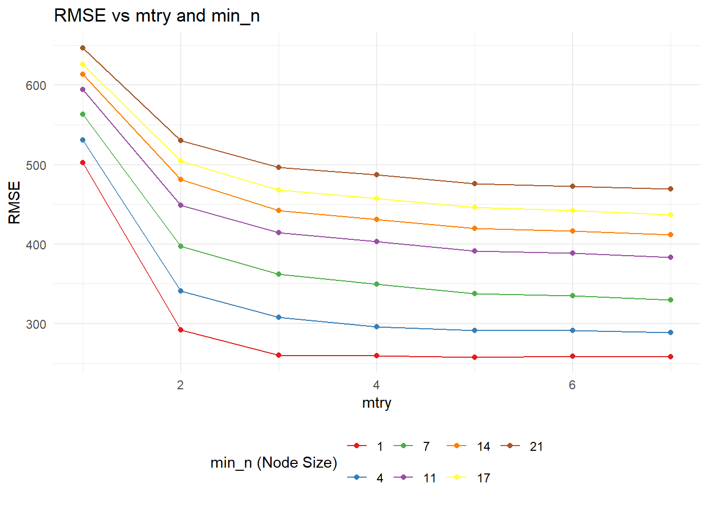
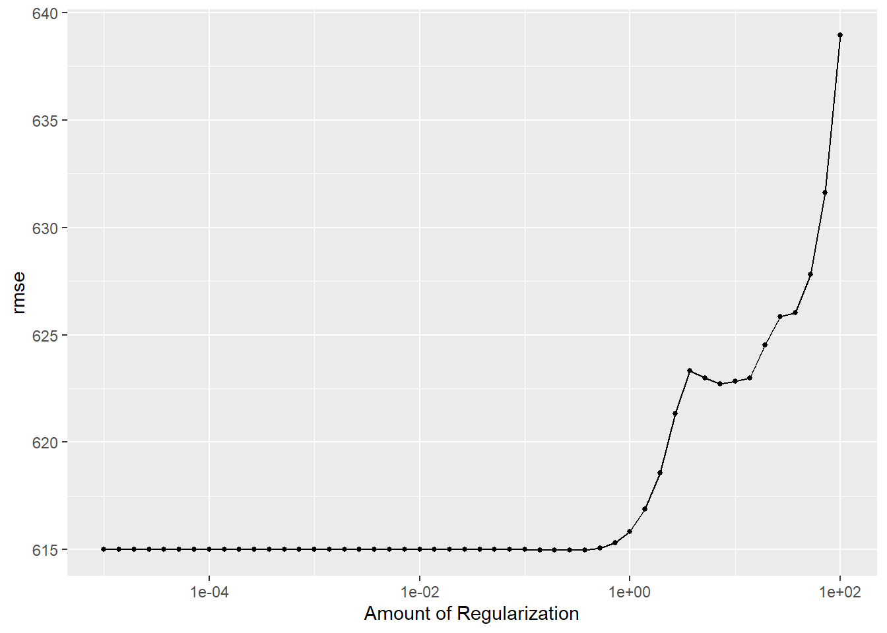
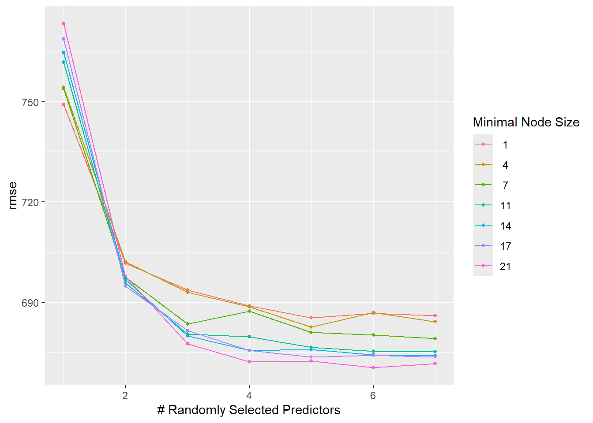

I tried to find the meaning of RACE = 7 and RACE = 88 in the paper. However, not enough information was given. Now, we write code that recodes RACE = 7 and RACE = 88 into RACE = 3.
Now, we look at a correlation plot for the continuous variables (Y, AGE, WT, HT)
library(corrplot)
corrplot 0.95 loaded
# Select only the relevant numeric variablesselected_vars <- drug_mag_final[, c("Y", "DOSE", "AGE", "HT", "WT")]# Compute correlation matrix (excluding missing values)cor_matrix <-cor(selected_vars, use ="complete.obs")# Generate a correlation plot using corrplotcorrplot(cor_matrix, method ="color", type ="upper", tl.cex =0.8, tl.col ="black")

We see that Y and DOSE are highly positively correlated. This is expected as the concentration of drug (Y), depends on the dose, and Y is the outcome variable. Age and height have a moderate negative correlation. Height and weight are also moderately positively correlated.
Overall, multicollinearity does not appear to be a significant issue.
Now, let’s compute the BMI. We do not have units for the height and weight. But based on the values seen, we can assume that the weight is in kilograms, and the height is in meters.
# Compute BMI and add it as a new variabledrug_mag_final <- drug_mag_final %>%mutate(BMI = WT / (HT^2)) # BMI = weight (kg) / height (m)^2# Check summary to verify BMI valuessummary(drug_mag_final$BMI)
Min. 1st Qu. Median Mean 3rd Qu. Max.
18.69 24.54 26.38 26.63 29.70 32.21
The summary of the BMI values shows that our guess of the units is probably right, as the computed values range from 18.69 to 32.21 (Normal BMI = 18.4 to 24.9 kg/m2).
Now, we move on to fitting the models. We will not split the data into training and test, but instead use all the data to fit the models.
First, we fit a linear model with all the predictors.
# Load necessary librarieslibrary(tidymodels)# Fit the linear regression modellinear_model <-linear_reg() %>%set_engine("lm") %>%set_mode("regression") %>%fit(Y ~ DOSE + HT + WT + AGE +as.factor(SEX) +as.factor(RACE) + BMI, data = drug_mag_final)# View the summary of the fitted modelsummary(linear_model$fit)
Call:
stats::lm(formula = Y ~ DOSE + HT + WT + AGE + as.factor(SEX) +
as.factor(RACE) + BMI, data = data)
Residuals:
Min 1Q Median 3Q Max
-1474.59 -350.58 -95.58 332.52 2459.99
Coefficients:
Estimate Std. Error t value Pr(>|t|)
(Intercept) 32051.213 10161.419 3.154 0.00207 **
DOSE 59.116 4.726 12.509 < 2e-16 ***
HT -16839.750 5727.944 -2.940 0.00400 **
WT 145.476 59.484 2.446 0.01603 *
AGE 4.533 7.471 0.607 0.54525
as.factor(SEX)2 -434.999 209.974 -2.072 0.04061 *
as.factor(RACE)2 157.942 124.315 1.271 0.20656
as.factor(RACE)3 -257.500 214.859 -1.198 0.23329
BMI -535.654 187.911 -2.851 0.00520 **
---
Signif. codes: 0 '***' 0.001 '**' 0.01 '*' 0.05 '.' 0.1 ' ' 1
Residual standard error: 594.3 on 111 degrees of freedom
Multiple R-squared: 0.6437, Adjusted R-squared: 0.618
F-statistic: 25.07 on 8 and 111 DF, p-value: < 2.2e-16
Now, we fit the model using LASSO regression:
# Load necessary librarieslibrary(tidymodels)# Fit the LASSO regression model using glmnet engine with penalty = 0.1lasso_model <-linear_reg(penalty =0.1) %>%set_engine("glmnet") %>%set_mode("regression") %>%fit(Y ~ DOSE + HT + WT + AGE + SEX + RACE + BMI, data = drug_mag_final)# View the summary of the fitted modelsummary(lasso_model$fit)
# Load necessary librarieslibrary(tidymodels)# Fit the Random Forest model using the ranger enginerf_model <-rand_forest() %>%set_engine("ranger", seed = rngseed) %>%set_mode("regression") %>%fit(Y ~ DOSE + HT + WT + AGE + SEX + RACE + BMI, data = drug_mag_final)# View the fitted model (the ranger object)rf_model
parsnip model object
Ranger result
Call:
ranger::ranger(x = maybe_data_frame(x), y = y, seed = ~rngseed, num.threads = 1, verbose = FALSE)
Type: Regression
Number of trees: 500
Sample size: 120
Number of independent variables: 7
Mtry: 2
Target node size: 5
Variable importance mode: none
Splitrule: variance
OOB prediction error (MSE): 490928.1
R squared (OOB): 0.4691189
Now, we have all 3 models.
Let us compute predictors for all the models.
# Make predictions with the linear modellinear_preds <-predict(linear_model, new_data = drug_mag_final) %>%bind_cols(drug_mag_final)# Make predictions with the Lasso modellasso_preds <-predict(lasso_model, new_data = drug_mag_final) %>%bind_cols(drug_mag_final) # Make predictions with the Random Forest modelrf_preds <-predict(rf_model, new_data = drug_mag_final) %>%bind_cols(drug_mag_final) #Combine into a data frameall_preds <- linear_preds %>%select(Y, pred_linear = .pred) %>%left_join(lasso_preds %>%select(Y, pred_lasso = .pred), by ="Y") %>%left_join(rf_preds %>%select(Y, pred_rf = .pred), by ="Y")# View the first few rows to check the structure of the combined datahead(all_preds)
# Calculate RMSE for the Linear Modellinear_rmse <-rmse(linear_preds, truth = Y, estimate = .pred)print(paste("Linear Model RMSE:", round(linear_rmse$.estimate, 2)))
[1] "Linear Model RMSE: 571.6"
# Calculate RMSE for the Lasso Modellasso_rmse <-rmse(lasso_preds, truth = Y, estimate = .pred)print(paste("Lasso Model RMSE:", round(lasso_rmse$.estimate, 2)))
[1] "Lasso Model RMSE: 581.47"
# Calculate RMSE for the Random Forest Modelrf_rmse <-rmse(rf_preds, truth = Y, estimate = .pred)print(paste("Random Forest Model RMSE:", round(rf_rmse$.estimate, 2)))
[1] "Random Forest Model RMSE: 359.86"
Now, we fit a plot for observed vs predicted values:
ggplot(all_preds) +geom_point(aes(x = Y, y = pred_linear, color ="Linear")) +geom_point(aes(x = Y, y = pred_lasso, color ="Lasso")) +geom_point(aes(x = Y, y = pred_rf, color ="Random Forest")) +geom_abline(slope =1, intercept =0, color ="red") +# Ideal linelabs(title ="Observed vs Predicted for All Models",x ="Observed",y ="Predicted") +theme_minimal() +scale_color_manual(values =c("Linear"="blue", "Lasso"="green", "Random Forest"="purple")) +theme(legend.title =element_blank())

We can see that the all of the models have a decent fit. The linear and LASSO models are almost the same, such that the blue dots for the linear model are mostly overlapped by the LASSO model.
We can also visualize these plots separately:
# Reshape the data to long format for facet_wraplong_preds <- all_preds %>%pivot_longer(cols =starts_with("pred_"), names_to ="model", values_to ="predicted")# Now, plot using facet_wrapggplot(long_preds, aes(x = Y, y = predicted)) +geom_point() +geom_abline(slope =1, intercept =0, color ="red") +# Ideal linelabs(title ="Observed vs Predicted for All Models",x ="Observed",y ="Predicted") +theme_minimal() +facet_wrap(~ model, scales ="free") +theme(legend.position ="none")

We can see that LASSO and linear look very similar. The RMSE for random forest is the lowest, and this model thus has the best performance. The RMSE for the linear and LASSo model are almost the same. This usually happens due to different reasons. One possible reason is high multicollinearity. However, here we observed that there isn’t a strong issue with multicollinearity. Thus, this is likely not the problem. The RMSE is same probably because the penalty for the LASSO is too low, resulting in a similar fit to the linear model. Additionally, this is a relatively small dataset (120 observations). This could also contribute to these two models being similar.
Now, we will tune our models:
library(tidymodels)# 1. Define the model specification with tuninglasso_spec <-linear_reg(penalty =tune(), mixture =1) %>%set_engine("glmnet") %>%set_mode("regression")# 2. Create tuning gridpenalty_grid <-tibble(penalty =10^seq(-5, 2, length.out =50))# 3. Perform tuning (without workflow)lasso_res <-tune_grid(object = lasso_spec,preprocessor = Y ~ DOSE + HT + WT + AGE + SEX + RACE + BMI,resamples =apparent(drug_mag_final),grid = penalty_grid,metrics =metric_set(rmse),control =control_grid(save_pred =TRUE) # Save predictions for manual calculation)# 4. Get RMSE resultsrmse_results <- lasso_res %>%collect_predictions() %>%group_by(penalty) %>%summarize(rmse =sqrt(mean((Y - .pred)^2)))# View resultsprint(rmse_results)
We can see that the RMSE increases with increase in penalty and is the lowest for the lowest penalty. The RMSE for the lowest penalty is the same as RMSE for linear model. (I was not able to use autoplot. Using ChatGPT gave me the following explanation - This could be happening because the apparent() function was used, and it’s returning a single observation for each penalty value, which isn’t enough data for the plot.
To solve this issue and allow autoplot() to work properly, we can manually create a data frame with RMSE values and their corresponding penalty values. Then, we can plot it manually.)
At the lowest penalty, the LASSO model is the same the linear model. At lowest penalty, the model is already minimizing the RMSE, since it is fitting our data perfectly (overfitting) When we increase the penalty, we reduce overfitting and simplify the model. But here, when we increase the penalty, we get a worse fit. This is happening because we are fitting the model to all the data, without any training testing split or cross-validation.
Now, let’s tune the random forest model:
# Load required librarieslibrary(tidymodels)library(dials) # Ensure that dials is loaded# 1. Define the Random Forest model specification with tuningrf_spec <-rand_forest(mtry =tune(), # Tuning mtrymin_n =tune(), # Tuning min_ntrees =300# Fixing trees at 300) %>%set_engine("ranger") %>%set_mode("regression")# 2. Define a recipe for preprocessingrf_recipe <-recipe(Y ~ DOSE + AGE + HT + WT + SEX + RACE + BMI, data = drug_mag_final) %>%step_normalize(all_numeric(), -all_outcomes()) # Normalize numeric predictors# 3. Set up a regular grid for mtry and min_n parameters (7 levels each)tuning_grid <-grid_regular(parameters(mtry(range =c(1, 7)), min_n(range =c(1, 21))), levels =7)# 4. Create a workflow combining the model and the reciperf_workflow <-workflow() %>%add_model(rf_spec) %>%add_recipe(rf_recipe)# 5. Perform tuning using tune_grid (no cross-validation, use all data with apparent())rf_tune_res <-tune_grid( rf_workflow, # Workflow with model and reciperesamples =apparent(drug_mag_final), # No resampling, use all datagrid = tuning_grid, # Tuning grid with mtry and min_nmetrics =metric_set(rmse), # Use RMSE for evaluationcontrol =control_grid(save_pred =TRUE) # Save predictions)# 6. Get predictions from the tuning resultsrf_predictions <-collect_predictions(rf_tune_res)# 7. Calculate RMSE by grouping by tuning parameters (mtry and min_n)rf_results <- rf_predictions %>%group_by(mtry, min_n) %>%summarize(rmse =sqrt(mean((Y - .pred)^2)), .groups ="drop")# Ensure min_n is treated as a factor for discrete coloringrf_results$min_n <-factor(rf_results$min_n)# 8. Plot RMSE vs mtry and min_n with different colors for min_nggplot(rf_results, aes(x = mtry, y = rmse, group = min_n, color = min_n)) +geom_line() +geom_point() +scale_color_brewer(palette ="Set1") +# Color palette for min_nlabs(title ="RMSE vs mtry and min_n", x ="mtry", y ="RMSE", color ="min_n (Node Size)") +theme_minimal() +theme(legend.position ="bottom")

We can see that lowest RMSE is seen with higher mtry values and lower min_n values. (Again, autoplot could not be used.)
Now, we use cross-validation:
# Set the random seed for reproducibilityset.seed(rngseed)# Create 5-fold cross-validation, repeated 5 timescv_folds <-vfold_cv(drug_mag_final, v =5, repeats =5)
Lasso model:
# Define the LASSO model specification with tuninglasso_spec <-linear_reg(penalty =tune(), mixture =1) %>%set_engine("glmnet") %>%set_mode("regression")# Create the tuning grid for LASSO penaltypenalty_grid <-tibble(penalty =10^seq(-5, 2, length.out =50))# Perform tuning for LASSO using 5x5 cross-validationlasso_res <-tune_grid(object = lasso_spec, # LASSO model specificationpreprocessor = Y ~ DOSE + HT + WT + AGE + SEX + RACE + BMI, # Formula for the reciperesamples = cv_folds, # Use 5x5 cross-validationgrid = penalty_grid, # Use the LASSO tuning gridmetrics =metric_set(rmse), # Use RMSE for evaluationcontrol =control_grid(save_pred =TRUE) # Save predictions for manual calculation)# Collect all metrics from the tuning resultslasso_metrics <-collect_metrics(lasso_res)lasso_metrics
# A tibble: 50 × 7
penalty .metric .estimator mean n std_err .config
<dbl> <chr> <chr> <dbl> <int> <dbl> <chr>
1 0.00001 rmse standard 615. 25 20.6 Preprocessor1_Model01
2 0.0000139 rmse standard 615. 25 20.6 Preprocessor1_Model02
3 0.0000193 rmse standard 615. 25 20.6 Preprocessor1_Model03
4 0.0000268 rmse standard 615. 25 20.6 Preprocessor1_Model04
5 0.0000373 rmse standard 615. 25 20.6 Preprocessor1_Model05
6 0.0000518 rmse standard 615. 25 20.6 Preprocessor1_Model06
7 0.0000720 rmse standard 615. 25 20.6 Preprocessor1_Model07
8 0.0001 rmse standard 615. 25 20.6 Preprocessor1_Model08
9 0.000139 rmse standard 615. 25 20.6 Preprocessor1_Model09
10 0.000193 rmse standard 615. 25 20.6 Preprocessor1_Model10
# ℹ 40 more rows
# Visualize the LASSO tuning resultsautoplot(lasso_res)

We see that RMSE is lowest with lowest penalty. But, the RMSE is now higher than what we obtained without cross-validation (610.65).
Now, let’s do the same with random forest.
# Define the Random Forest model specification with tuningrf_spec <-rand_forest(mtry =tune(), # Tuning mtrymin_n =tune(), # Tuning min_ntrees =300# Fixing trees at 300) %>%set_engine("ranger") %>%set_mode("regression")# Define a recipe for preprocessingrf_recipe <-recipe(Y ~ DOSE + AGE + HT + WT + SEX + RACE + BMI, data = drug_mag_final) %>%step_normalize(all_numeric(), -all_outcomes()) # Normalize numeric predictors# Set up a regular grid for mtry and min_n parameters (7 levels each)tuning_grid <-grid_regular(parameters(mtry(range =c(1, 7)), min_n(range =c(1, 21))), levels =7)# Create a workflow combining the model and the reciperf_workflow <-workflow() %>%add_model(rf_spec) %>%add_recipe(rf_recipe)# Perform tuning for Random Forest using 5x5 cross-validationrf_tune_res <-tune_grid( rf_workflow, # Workflow with model and reciperesamples = cv_folds, # Use 5x5 cross-validationgrid = tuning_grid, # Tuning grid for mtry and min_nmetrics =metric_set(rmse), # Use RMSE for evaluationcontrol =control_grid(save_pred =TRUE) # Save predictions for manual calculation)# Visualize the Random Forest tuning resultsautoplot(rf_tune_res)

We see that rmse decreases with increase in the number of predictors. The lowest RMSE is 670.48.
The RMSE for the LASSO is lower than the random forest.
This is probably because the dataset is too small for random forest. Random forest requires careful tuning of parameters. LASSO performs better with continuous predictors and strong linear relationships. Lasso generally makes the model simpler and removes unnecessary predictors, ensuring a better fit.